At 5:55am on Monday morning, a man named Michael Somers was calling my phone.
Arya the bernadoodle had been missing for nearly 48 hours, and now, finally, Michael was not only looking at her, but slowly following her through a rainy dawn in northern Durham. He sensed (correctly) that approaching the dog in any way would only make her flee. So instead he followed, carefully and calmy, and kept trying to call me, text me, voicemail me:
I should’ve been jumping into my car with Huck, Arya’s brother-dog, and racing towards Michael; I should’ve been trying to cut her off and draw her in at that very moment; I should’ve been trying to end a weekend of stress and anxiety and so much work and support by so many friends and strangers. There was just one problem:
My phone was dead. And so I lay blissfully asleep.
* * *
David Spratte and I met in 2014 as freshmen in college at UNC (he) and Duke (I). Within a year, we’d launched Carpe, a brand of sweat-stopping products for all over the body, for neglected or excessive sweat that other brands just don’t care about.
Since the muggy 2014 night when Carpe had begun, the company had grown massively, David had married the stunningly intelligent and beautiful Brooke Namboodri, and we’d moved into separate houses – theirs in the vicinity of Southpoint, mine just south of downtown Durham.
Since they’d met, David and Brooke had also brought in two rescue dogs. The first, Huck, was a small jet-black mutt that I maintain is mostly border collie – a fiercely happy and focused pup who lives by the simple credo of “ball is life”, or in his case, “tennis ball is life”. The second, Arya, was a lanky and beautiful and perpetually terrified black bernadoodle who David and I had picked up from Ohio a couple years ago, after she’d spent her first few months violently abused at an Amish puppy mill.
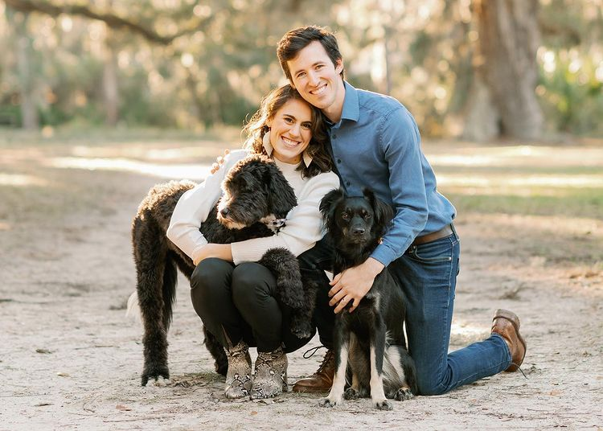David and Brooke and the dogs were a happy family. Arya had been a handful at times – and Huck had needed intestinal surgery after eating some lace underwear – but even with these hiccups, life was good.
And then, in the post-pandemic summer of 2021, David and Brooke asked me to take care of Huck and Arya for five days while they were out of town.
I was excited. I liked dogs, I liked these dogs, I liked new experiences – Arya in particular couldn’t be left alone for more than an hour or two, so I’d be spending five days bringing her everywhere I went. With now-apparent prescience, I thought – this will be an adventure!
And so, at 5:30am on Saturday, July 17th, 2021, I drove David and Brooke and the dogs (dressed in sharp white bandanas) to the airport – Brooke wanted to be with them for as long as she possibly could. As I pulled away from the terminal, Huck and Arya were staring intently at it, somewhat concerned by their owners’ disappearance within, and this borderline stranger now driving off with them.
I went back to Brooke and David’s house, where I’d be living with the dogs (due to the Huck-proofed living room and Arya-proofed bedroom); I fed them, walked them, and left Huck inside the house while Arya and I drove north to my own home, so I could do some laundry (pants, mostly) for the week. Huck was, by now, completely non-plussed by his new circumstances. Arya remained concerned.
At my house, I started the wash, sat down on the couch, and watched Arya nervously pace about, occasionally pawing at the door. I went to grab something from the car, came back through the porch gate and door, and, seeing Arya now start jumping at the door (perhaps she needed to pee?), decided that I should let her out to my backyard so she could pee.
As I began to open my porch door, two thoughts slammed into me: One, Arya should never be in my backyard without a leash on; and two, I hadn’t closed the porch gate, had I.
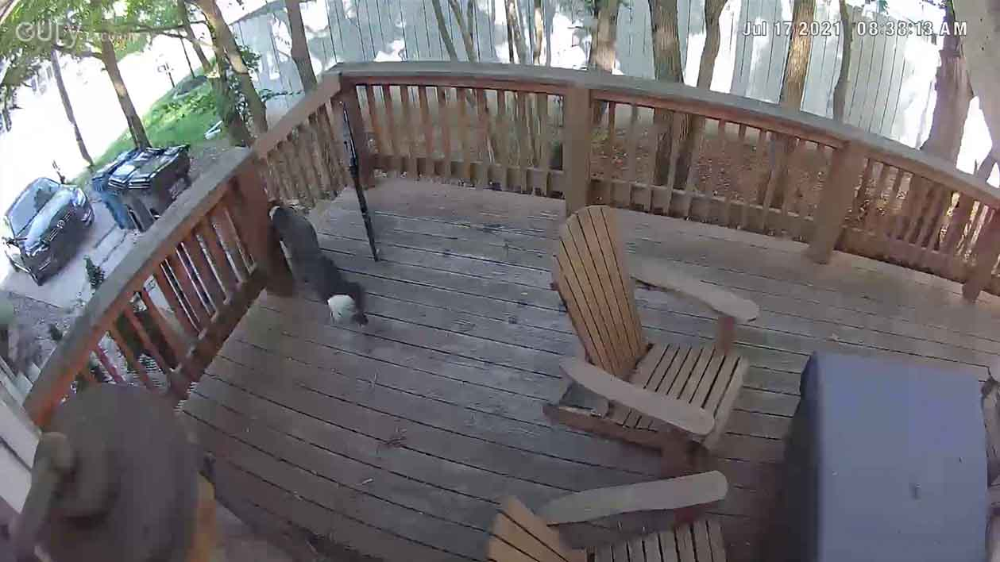And so, at 8:38am, just over three hours into my five-day promise, I lost Arya.
I slipped on my crocs and ran into the street in my underwear (the laundry had obviously included all my pants). Arya was gone. I ran down the street, saw a neighbor pointing north – there, two hundred yards away, stood Arya in the middle of the road, looking back at me. It was the last time I’d see her for days.
She took off at a gallop, into the graveyard. I followed behind, sprinting as fast as my crocs would carry me. Up the street, across a road, through the graveyard to the top of its hill – and Arya nowhere to be seen in any direction.
I swore, I turned, and I ran back to my house, finding some unused sweatpants and diving into my car.
The next afternoon, I’d receive a call from a stranger named Lauren, who’d tell me that she saw Arya walking past Carpe’s downtown office at 9am on Saturday. That next afternoon, I’d regret not focusing my immediate search on downtown Durham, where I suspected Arya may have fled due to the countless days she’d spent at Carpe’s office there. But on that Saturday morning, to me, Arya could’ve been anywhere.
Over the next six hours, driving alone would turn into driving with friends (thank you Keegan and Jonah!), which would turn into walking my neighborhood with Huck in the hope of leaving behind a scent that would draw Arya home.
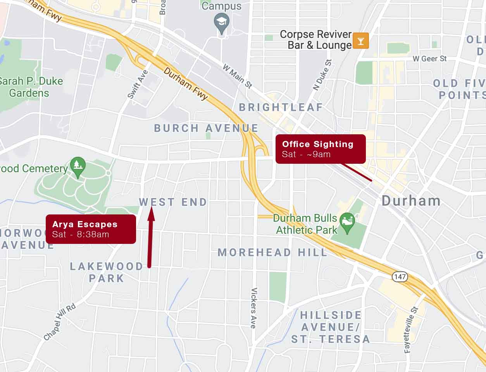David was immediately calm and supportive when I reached him on the very first layover of his weeklong trip. As was his sister Lauren (not to be confused with future-stranger Lauren), who gently and urgently began guiding me to all the local missing dog Facebook pages and suggesting how I should proceed. Lauren had been present for Arya’s previous bolting, when David’s family were taking care of the dog and, after a two-hour search, cornered her in a major intersection three miles from her point of escape.
By early afternoon, I accepted that I lacked the luck to find the right intersection this time, even after nearly six hours of searching. I’d need the help of the community – the help of Durham. I set up this website, I posted on every Facebook page and Nextdoor and subreddit and listserv I could find (thank you Chris for getting the word out to so many!), and I began printing flyers.
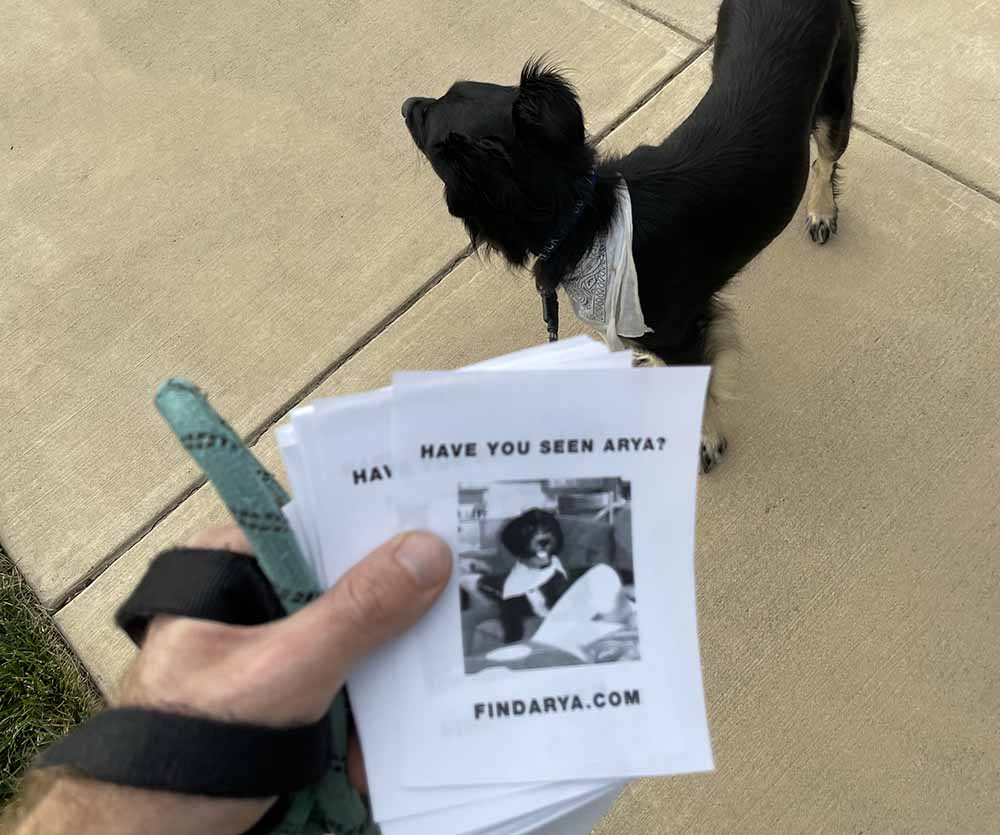Miraculously, one of the Facebook postings received an almost-immediate reply – someone had seen Arya by Bull City Ciderworks, weaving between the four lanes of traffic on South Roxboro. I raced to the area and alerted a quickly-growing group of friends on the Find Arya iMessage.
I pushed away the obvious thought that a report of Arya sprinting through traffic brought. She was wearing a collar with David’s number (now call-forwarding to mine) printed in large type on its band. No calls to that number were… good news. She’d never let anyone approach her if she was still walking – so the best we could hope for were sightings from people who’d seen our website or flyers and contacted me directly.
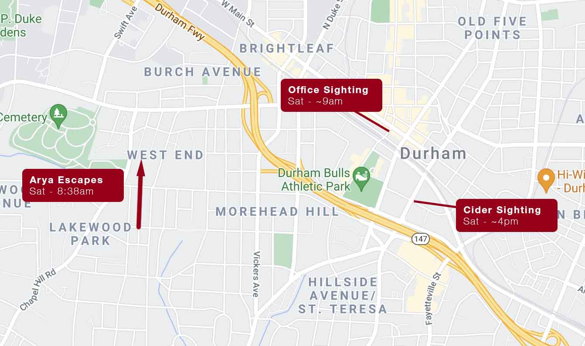We didn’t find Arya after the reported sighting – but at this point, Keegan and Danielle and Ellie and Alia and Madeline and Jonah and Dale had dropped their Saturday plans and all driven down to help distribute flyers and ask if anyone had seen the dog with the white bandana (Danielle and Ellie had left a music festival in Virginia as soon as they’d arrived there, just to join the search). Alia, dropping any pretense or inhibition, soon began walking up to every cop she saw and asking whether they could “put out an APB for the dog in the bandana”, and asking every restaurant in the area to put up and hand out flyers. The response was massive – I received a message from Betsy at Bull McCabe’s asking how she could help, and in the coming days, most restaurants I visited had “Have you seen Arya?” signs up.
Saturday night ultimately proved fruitless – many people told us they’d seen Arya, but all of these sightings were coincident with the mid-afternoon Bull City Ciderworks encounter, when, as we eventually learned, some people had been trying to chase and catch the uncatchable dog.
The day had been a heavy blur, suffused with a feeling of nightmarish unreality – how could Arya be gone? How had one second, one stupid mistake, led to such a possibly lifechanging crisis? My morning search had been interspersed with swears of self-loathing, with anger at this terrified dog for being so damn terrified, with me punching my thigh over a tiny mistake I could never undo. Within hours, this was gone, replaced with sorrow and fear and love for Arya, for that poor terrified dog who had no idea where she was or where her owners were or where Huck was. And by evening, all I felt was exhaustion.
Two memories from Saturday evening stand out from that haze of exhaustion.
In the first, I’m pumping gas at the BP on Fayetteville Street, Huck looking at me from the back seat of my Passat, while I focus on a 2x-speed YouTube video about “calming signals” that the Lost & Found Pets of the Triangle, NC FB Page had sent me. Intuitively, the video makes sense – when scared dogs are in survival mode, looking at them or approaching them triggers the primal fear of a predator; so the way to draw them in is to sit down, almost lie down, and pretend to be eating some loud-smelling food. Prior to her escape, Arya had slunk away from me that morning every time I had so much as glanced at her – she’d been in a state of fear from the moment she left David and Brooke.
In the second memory, it’s night, and I’m at my friends Russell and Grace’s house, feeding their cats while they’re out of town (despite my track record, I was taking care of multiple sets of pets that day, including my own cat). My phone rings, and the caller introduces herself as Mary, a volunteer from the Missing Animal Rescue Network. Over the next half hour, Mary explains to me exactly what we’re going to do to find Arya – the way we need to make unmissable neon posters, the food and trail cameras we’ll set out, the eventual tracking dog and cage trap we may have to bring in. For the first time, I feel that this search for Arya has become so much bigger than me – that between Mary, the ever-growing Find Arya iMessage crew, and the strangers of Durham helping out, the search for Arya has taken on a life and power of its own, a power much stronger than I could ever muster. It’s an amazing feeling.
Arya has a tendency to sundown, i.e. become even more anxious and paranoid at night – and on Saturday night, this was likely exacerbated by the fact that she hadn’t received her evening dose of panic medication. So as the sun set on the first day of our crisis, after I fed the cats, I knew there was no point in staying up any longer. Inside, I would’ve been broken – but for the amazing support I was receiving from David and Brooke and their families. Lauren in particular is quite possibly the perfect human, and despite a full-time job and a baby to take care of, and the fact that she lives in Atlanta, she had worked ceaselessly on Saturday to help the search in any way she could, and critically, to keep my spirits up. But even with Lauren, I would’ve likely fallen asleep in sobs if not for Huck.
All through the day, Huck had looked at me quietly, following my every command, resting his head on my arm any time we drove together. At night, he hopped in my bed and curled up against me. I’m certain he knew exactly what was happening, and knew profoundly how to be there for me, how to support me and to support the search for his sister. It was a type of love that I desperately needed that day. And for that love and support I will never forget him.
* * *
Huck and I woke up early on Sunday morning, and as I drove to Dollar General to buy 40 neon posterboards, I realized I was smiling for the first time since Arya had bolted from me. I was nervous, I was tired, but dozens of people were dropping everything to help find Arya– we had an incredible crew, and thanks to Mary, we had a plan. We were going to bring Arya home.
By mid-afternoon, more emails were going out, Rebecca and Madeline and Jonah and Joseph and Danielle and Ellie and Allison (in spite of her bridal shower that day!) and MC and Alia and Emily and Anthony and Rafi and Kendall and Jess and Eddie were all out hanging posters and handing out flyers and asking everyone they came across whether they’d seen the dog in the white bandana. Even two complete strangers – Lauren-the-stranger and Brantley – joined the search for most of the day after seeing our posters.
The Durham Bulls surprised us all when (after Lauren-the-sister’s calls and coordination) they helped us out for free and announced to a crowd of thousands:
We need your help finding a beautiful and scared missing dog! Arya (spelled A R Y A) is a lanky black doodle with a white bandana and white-tipped tail. She was seen all over downtown Durham yesterday, and is still missing. If you see her - do not chase, she is very skittish. Go to findarya.com - that’s find A R Y A dot com - and report the sighting. Bulls family, please help us get this dog home!
Durham was coming together in love and support – eyewitness reports began to roll in, and we soon established that Arya had spent most of Saturday sauntering around downtown Durham, though nobody had seen her yet on Sunday. This made us nervous, but we pressed on. Mary and I began setting up a trail camera, food cache, and scent trail around the back door of Carpe’s office.
And then we received our first live sighting: Arya was alive and well, trotting down Cleveland street, just north of downtown.
The roughly fifteen-strong crew raced to the area from every possible direction, coordinated by Lauren-the-sister – but not one of us saw Arya. Thirty minutes after the initial call, the firefighters on Cleveland saw Arya there again, and an hour after that, we received a call from a man who’d seen her half a mile north. We all rolled out again to the final sighting – and just as we arrived, a massive crack of thunder split the sky above us, and rain began pouring down in sheets.
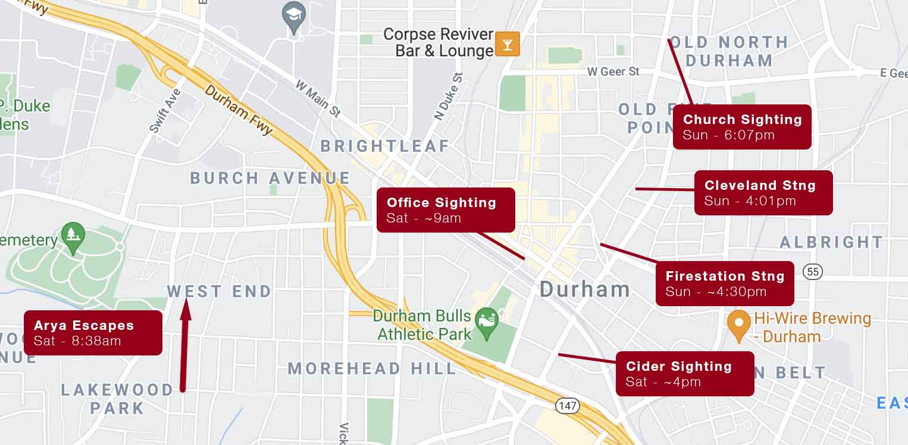In the hours that followed, the rain somehow only became more intense, and as twilight turned to pitch-black night, we knew we wouldn’t be seeing Arya that day. But the group pressed on – converting “Lost Dog” posters Mary had provided from a previous search into posters of Arya; and drawing up new posters on the 64 neon sheets that I’d just picked up from Dollar General.
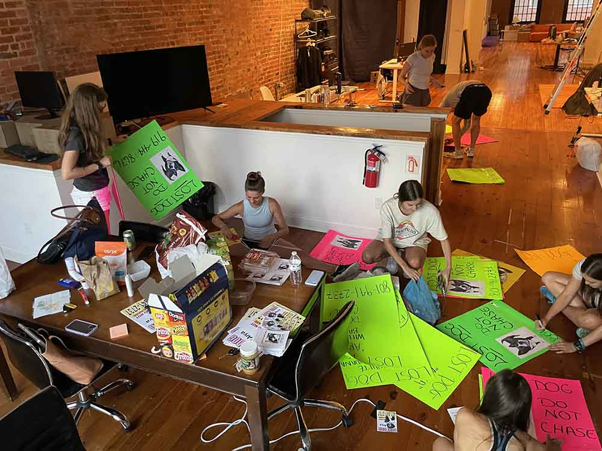As the rain abated, we put up a few more of the waterproofed posters, including some at the rear of the local post office, hoping that the mailpeople would see them and call in Arya from their routes the next day.
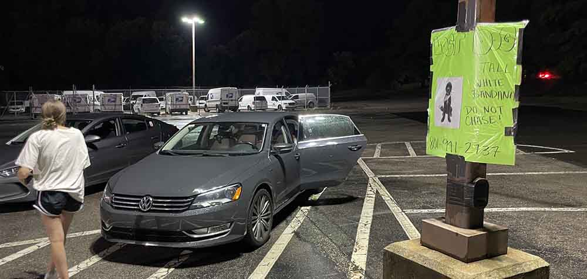We were exhausted, but we were hopeful. The next day was Monday, so most of us would have work – but everyone committed to spending as much time as possible helping with the search when they could.
And so we all went home, and went to bed – and I, apparently, placed my phone on its charger at just slightly the wrong angle.
* * *
I woke up on Monday at 6:02am with my watch beeping – which was strange, because my phone’s was the alarm that was supposed to wake me up. I reached over to the phone, groaned when I realized that it had died overnight, plugged it in to a different charging cable, and rolled back over to get a few more minutes of shut-eye with Huck.
Except that almost immediately, the phone powered up and rang. Could it be a sighting?? I thought excitedly, rolling out of bed and picking up the phone. On the other end was Michael, who explained that he’d been following Arya through the morning fog and rain for nearly fifteen minutes as she wandered in circles all around the Geer Street area.
I was floored. This wasn’t just a sighting, this wasn’t someone who’d seen Arya “a few blocks back” and called to mention the fact as they continued on to work. Here was a guy who was actually following Arya, who would do everything to keep his eyes on her until I arrived.
I stood frozen for a second before my brain processed what I had to do – “yeah, I’ll be right there, my God thank you, I’ll be right there,” my words stumbled out. I ran to my closet, threw on the first pair of pants and shirt I saw, grabbed my hangover glasses from my nightstand, and excitedly yelled at Huck to get up. He was even more sleep-shocked than I’d been, but quickly came to his senses as we raced out the same door Arya had escaped through two days prior, not even locking it behind us.
I’d recently become a fan of Formula 1, an occurrence which may have helped Huck and I get from my house to northern Durham faster than I ever had before. As we raced up Elizabeth street, my phone rang – Michael again.
“She’s going up the off-ramp to the freeway here, I’m out of my car and I’m following her,” he said (or something along those lines).
I didn’t feel anything new upon hearing that news – my adrenaline was already at peak levels. As soon as I established which off-ramp Michael was talking about, I turned my car towards it and presently found myself under the right overpass.
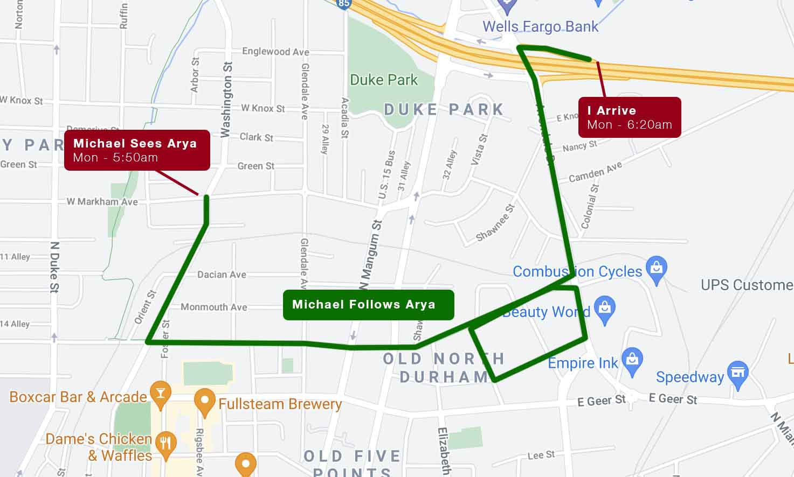I bounced the curb – leaving my Passat half off the road at an angle – and grabbed nothing but Huck and a jar of peanut butter from the car. I began running from the vehicle, then briefly turned back, grabbed a “Lost Dog” poster from the back seat, and threw it across my rear windshield. Both an explanation and a request for help, I figured.
As I ran up the off-ramp, I saw Michael 200 yards off – and in front of him, for the first time in two days, I saw Arya.
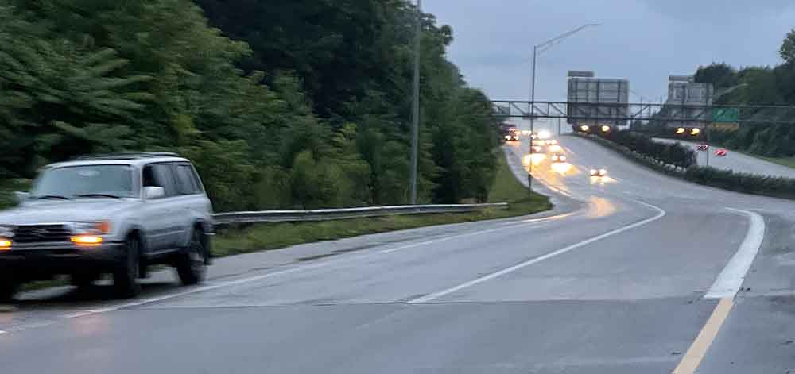She was, both relievingly and unfortunately, trotting in a healthy and brisk manner. Michael would later tell me that he hoped the semi in front of them would stay on the shoulder, but instead it pulled into traffic, leaving Arya a long and wide path to keep escaping along.
Huck tired of our run after a few minutes, but we’d managed to catch up to Michael. He was exactly the kind of person you’d expect to drop everything to help save your dog – a father, owner of a bernadoodle himself, and on his way to a morning crossfit workout. I’d later learn that he was an administrator in the Durham County public school system.
Michael turned back to get to his car and try to cut us off from the front, as Huck and I followed Arya along the long freeway shoulder, cars whizzing past. I didn’t worry about them at all – Arya seemed to understand their danger. But she also seemed to understand that the people 200 yards behind her were after her, and she would not let us get close.
When Arya ran and got too far away, I’d pick up Huck and run with him in my arms, rain pouring down my glasses as passing drivers wondered what kind of mental breakdown I’d recently had. When Arya would slow down, I’d set down Huck and we’d attempt to calmly approach.
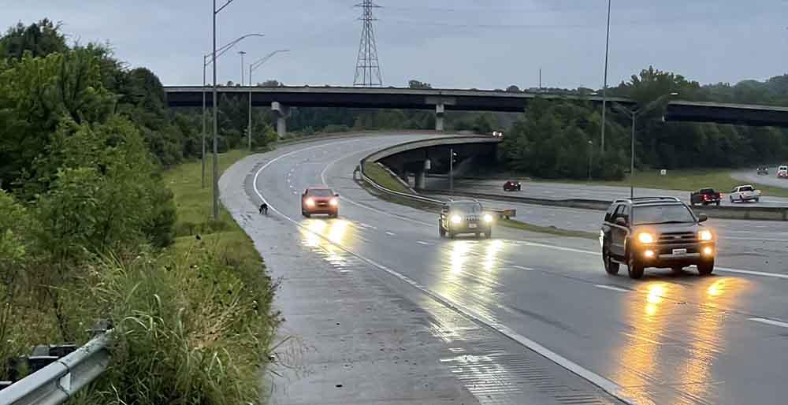As we crossed the interchange and I-85 became Highway 70, Michael was waiting at the fork to see where Arya would go. She dodged past his SUV and continued down the shoulder, though this time at her fastest pace yet.
I picked up Huck and ran with everything I could, as my Whoop would later attest.
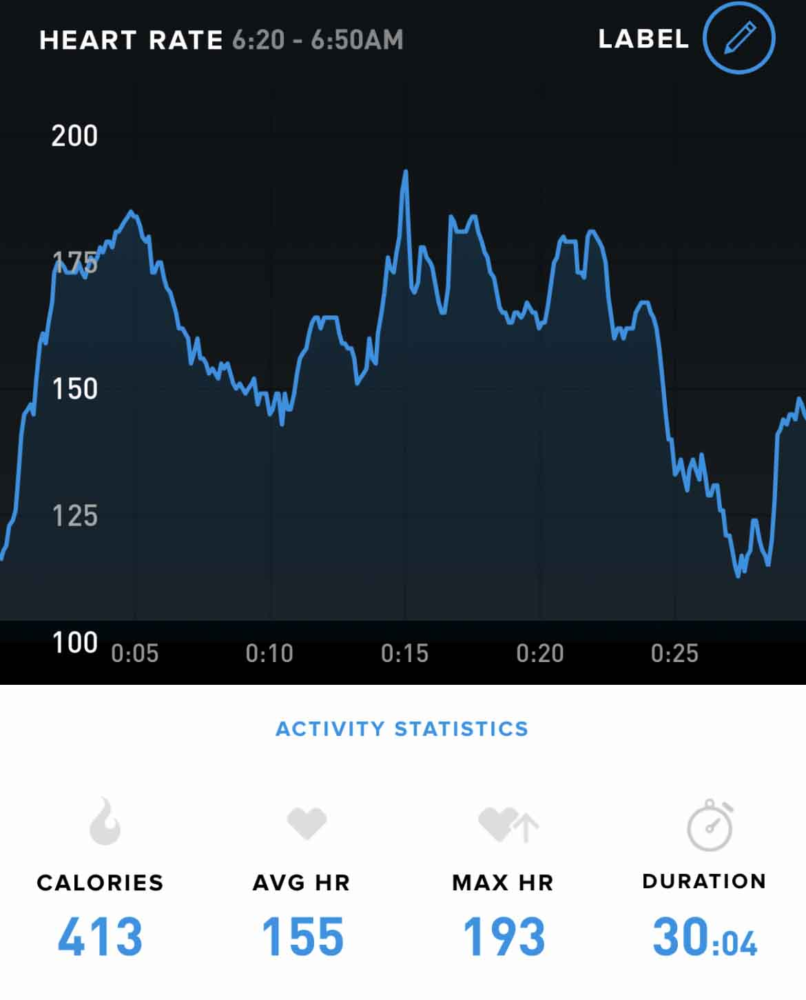But Arya was soon out of sight behind the curve of the hill and bend of the road. She was so far from all the posters, so far from where she’d spent the weekend. If we lost her here, I had no idea how we’d ever find her again.
I got to an on-ramp and ran up it; a man in a construction truck said he’d seen the white-bandana dog run past but didn’t see which way she went. I kept going up the ramp.
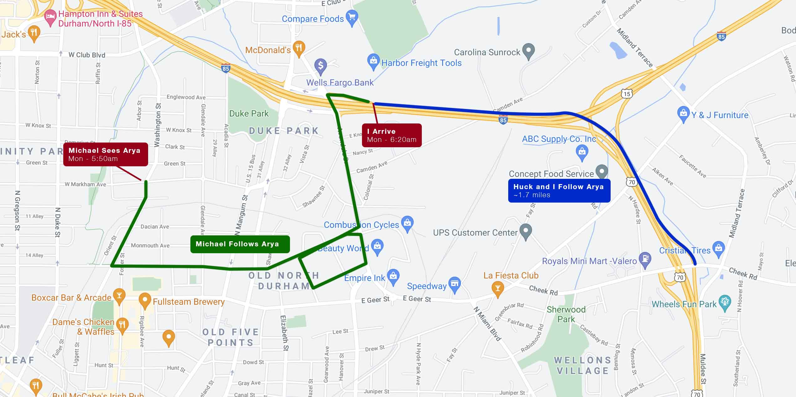Then came the luckiest sequence of events in my life.
A driver, seeing me running with Huck in my arms, rolled down his window and yelled “The dog’s back down that road, on the first street to the left”. I yelled an almost sobbing thanks at him, and just then reached the top of the overpass hill, looking down Cheek Road and seeing Arya trotting from a side-street into its main intersection, followed closely by Michael’s SUV.
I ran across Cheek Road, hoping against hope that Arya would somehow come towards Huck and me. And then a driver coming from our direction, incredibly grasping the entire situation, swerved to the right and far side of the intersection, which corralled Arya back up the road and directly towards Huck and me.
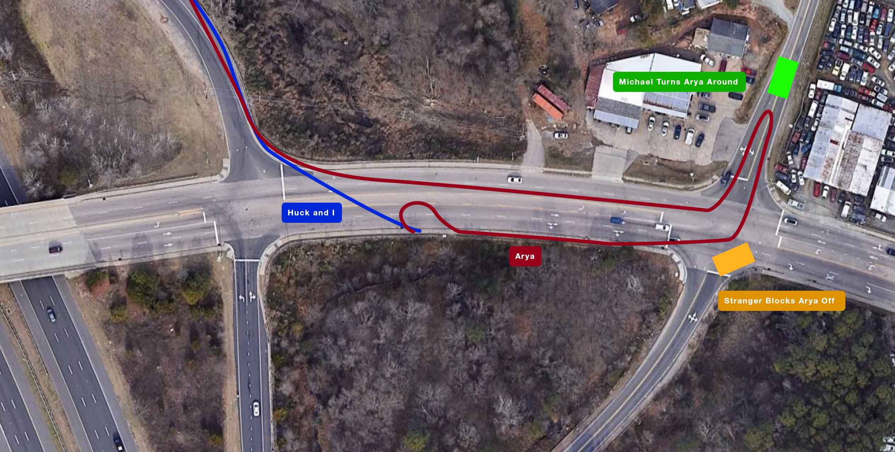I was filled with a surreal adrenaline calm; a feeling that everything was on the line, but that I knew exactly what I needed to do, and that it’s all I could do. Without looking at Arya, I sat down on the sidewalk, opened the peanut butter jar, and scooped a handful of it out with three fingers.
Huck noticed this and just about lost his mind – he jumped on me and began licking the peanut butter madly, smearing it all over my shirt. I started happily saying “eat eat – Huck, eat eat!” – the dogs’ meal-call.
Arya kept trotting towards us, and out of the corner of my eye, I could tell that she was looking our way.
I scooped out more peanut butter, and I thought Huck might pee from the excitement. He kept attacking the sweet paste, and Arya kept her nervous eyes on the scene, but as she approached us, she began to trot out into the road, giving us a wide berth as she moved past us and up the road.
Then, all of a sudden – and I don’t know whether she had finally smelled us, or whether Huck ran towards her and she recognized him – Arya came around from behind us and ran up to Huck, and the two of them began jumping and licking each other, tails wagging furiously with all the energy the peanut butter had spurred now amplified by this reunion.
In that moment, I knew that Arya was home, that she wouldn’t leave. For nearly 48 hours, she’d been running through Durham; scared, confused, and alone. She’d been chased by strangers and sprinted for survival, and now she’d finally found her best friend. I knew that no matter what happened now, Arya would stay with Huck, because she wanted to be back as much as we wanted her back.
I kept scooping peanut butter, and kept calling out, without looking directly at Arya, “eat eat!” She came towards me, hesitated, turned back and licked Huck, then came at me and began eagerly gobbling up the peanut butter. I lifted my other hand and gently caressed her head, firmly gripping her collar as I did.
I don’t know if I was crying at that moment – I wouldn’t have known through all the rain on my face. But I know that, in that second, I was gasping with so much joy and so much love for Arya, and so much unbelievable love for everyone who had dropped everything that weekend, so many friends and so many strangers alike, to make this moment happen.
Thank you Michael and Mary and Lauren and David and Brooke and Huck and everyone who supported me through the most trying weekend of my life.
Thank you Durham, for coming together so selflessly to help, for the signs you put up and calls you made.
Thank you to everyone who brought Arya home.
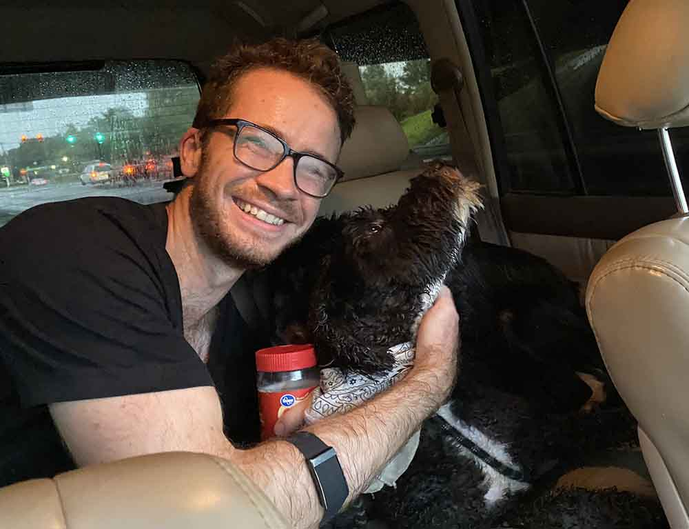 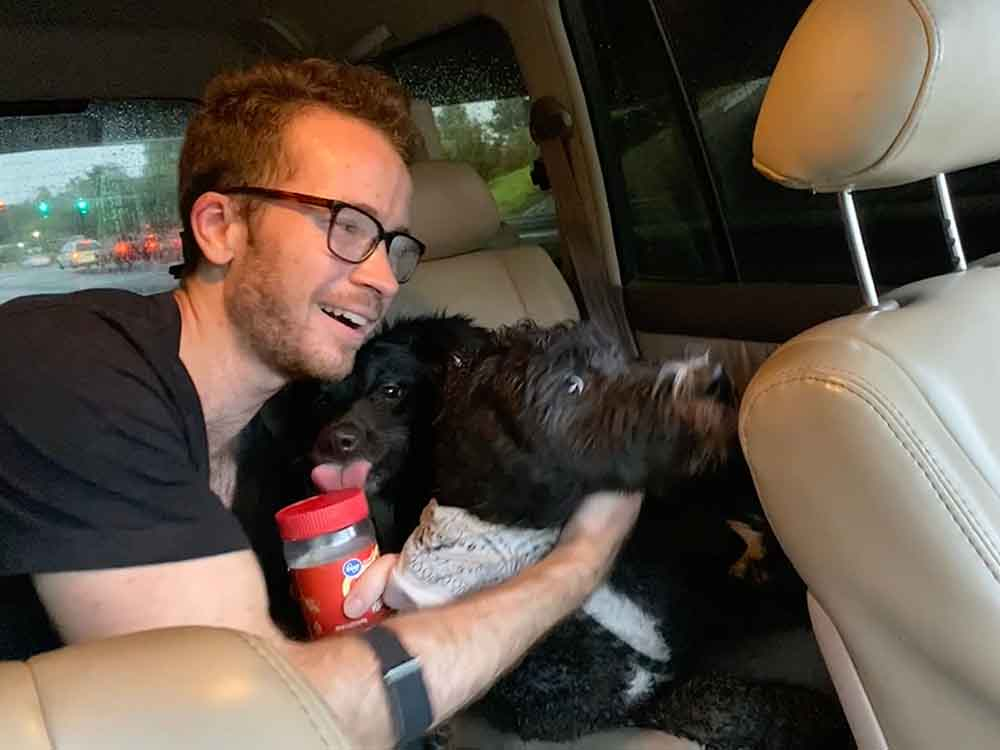 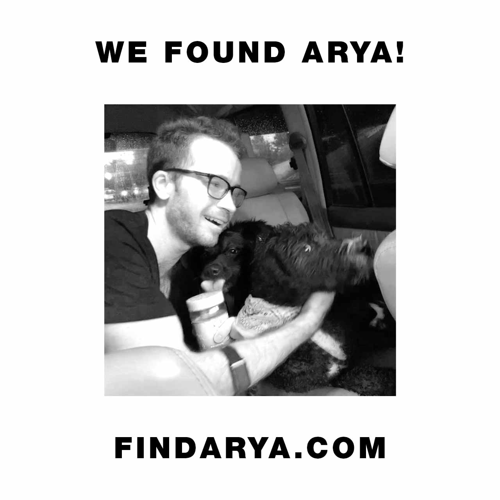Arya has an Instagram now! You can follow her @aryathebernadoodle